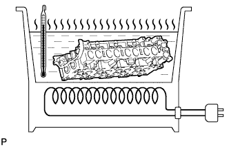
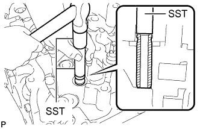
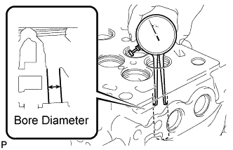
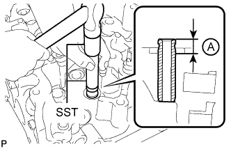
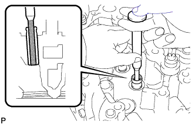
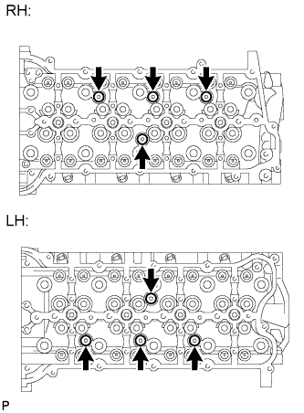
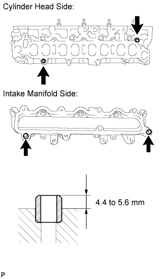
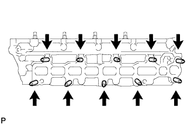

CYLINDER HEAD > REPLACEMENT |
| 1. REPLACE VALVE GUIDE BUSH |
 |
Gradually heat the cylinder head to 80 to 100°C (176 to 212°F).
Place the cylinder head on a wooden block.
 |
Using SST, tap out the valve guide bush.
 |
Using a caliper gauge, measure the bush bore diameter of the cylinder head.
| Item | Specified Condition |
| STD | 11.033 to 11.044 mm (0.434 to 0.435 in.) |
| O/S 0.05 | 11.083 to 11.094 mm (0.436 to 0.437 in.) |
Gradually heat the cylinder head to 80 to 100°C (176 to 212°F).
Place the cylinder head on a wooden block.
 |
Using SST, tap in a new valve guide bush to the specified protrusion height A shown in the illustration.
 |
Using a sharp 6.0 mm reamer, ream the valve guide bush to obtain the standard specified clearance between the valve guide bush and valve stem.
| Item | Specified Condition |
| Intake | 0.025 to 0.060 mm (0.000984 to 0.00236 in.) |
| Exhaust | 0.035 to 0.070 mm (0.00138 to 0.00276 in.) |
| 2. REPLACE HEAD STRAIGHT SCREW PLUG |
 |
Using a 6 mm hexagon wrench, remove the straight screw plug and gasket.
Using a 6 mm hexagon wrench, install a new gasket and straight screw plug.
| 3. REPLACE RING PIN |
 |
Remove the ring pins.
Using a plastic-faced hammer, tap in new ring pins.
| 4. REPLACE STUD BOLT |
 |
Using an E8 "TORX" wrench, remove the stud bolts.
Using an E8 "TORX" wrench, install new stud bolts.